Guest ordering from Done
Let guests order for themselves – on their phone, at the kiosk and online.
Guests order and pay for themselves, without queuing. The order goes straight to the kitchen, and the guest gets an order confirmation by SMS.
You choose the surfaces that suit your business – a QR code on the table, a self-service kiosk or online ordering. Everything runs from the same setup as your till.
The screenshots show the Norwegian version. Guests can switch every surface to English.
QR ordering
Guests order from the table – on their own phone
A QR code on the table is all it takes. Guests scan, choose from the menu and pay in the browser. No app, no sign-in and no queue at the counter.
-
Step 1 of 5
Straight in from the QR code
Guests scan the code and land on the welcome page with your image, your logo and your welcome text.
- Guests choose Norwegian or English
- The estimated waiting time is shown up front
- You can add a short “How to order”

-
Step 2 of 5
A menu that is easy to browse
The menu is split into categories with large photos and clear prices.
- Category tabs at the top: Food, Dessert, Drinks
- A filter to find things in long menus
- The cart is always one tap away

-
Step 3 of 5
Make it their own
Tapping a dish opens the details. Guests can remove ingredients and add extras, and the price updates straight away.
- A description and a large photo
- Remove and extra, with a price per add-on
- Required choices, such as size, must be made

-
Step 4 of 5
An overview before paying
Guests see the whole order with its options and the total before they pay.
- Change quantities or remove items
- Options are listed under each item
- Guests can cancel at any time

-
Step 5 of 5
Mobile number and payment
Guests enter their mobile number and pay by card on a secure payment page. After paying, they get a confirmation with an order number.
- The Norwegian country code is preselected
- The order confirmation is sent by SMS
- The order goes straight to the kitchen

Self-service kiosk
The kiosk takes the order – and the payment
A large touchscreen with a card terminal next to it. The kiosk comes in landscape and portrait, and guests pay by card without waiting for staff.
Try the landscape kiosk (opens in a new tab)Try the portrait kiosk (opens in a new tab)
-
Step 1 of 6
Ready for the next guest
The kiosk shows an image, a logo and a welcome text, and waits for the next guest.
- Guests choose Norwegian or English
- The language resets for every new guest
- One tap starts the order


-
Step 2 of 6
Eat in or take away
Guests choose whether to eat on site or take the food away, and the right VAT follows the choice.
- Two large buttons that are easy to hit
- Can be turned off if you only offer one of them


-
Step 3 of 6
A menu made for touch
Large photos and clear categories. The layout adapts to the screen.
- Landscape: the order is always visible on the right
- Portrait: the categories sit in a column on the left
- The number of dishes per category is shown


-
Step 4 of 6
Add-ons with prices
Guests customise the dish and see the price change before adding it to the cart.
- Remove ingredients or add extras
- Choose the quantity right in the sheet


-
Step 5 of 6
The cart
In landscape the cart stays on the right. In portrait it slides up from the bottom.
- VAT and the total are shown
- Change quantities or remove items
- Guests can cancel the order


-
Step 6 of 6
Mobile number and card payment
Guests type their mobile number on the screen and pay on the card terminal at the kiosk. After paying, the order number is shown.
- A number pad on the screen
- Card payment on the terminal
- Collect the order when the number is shown


Online Order
Order online – collect when it suits
Guests order from a phone or a computer, choose when the food should be ready and collect it at the counter. The same menu and the same setup as the rest of your business.
-
Step 1 of 9
Your own ordering page
The home page shows an image, a logo, a welcome text and the estimated waiting time. You can add a short guide.
- Works just as well on a computer and a phone
- Norwegian and English


-
Step 2 of 9
The same menu on computer and phone
Dishes with large photos and prices, sorted into categories. On a computer the cart is always visible next to the menu.
- Category tabs at the top
- A filter to find things
- A log-in button for regular guests
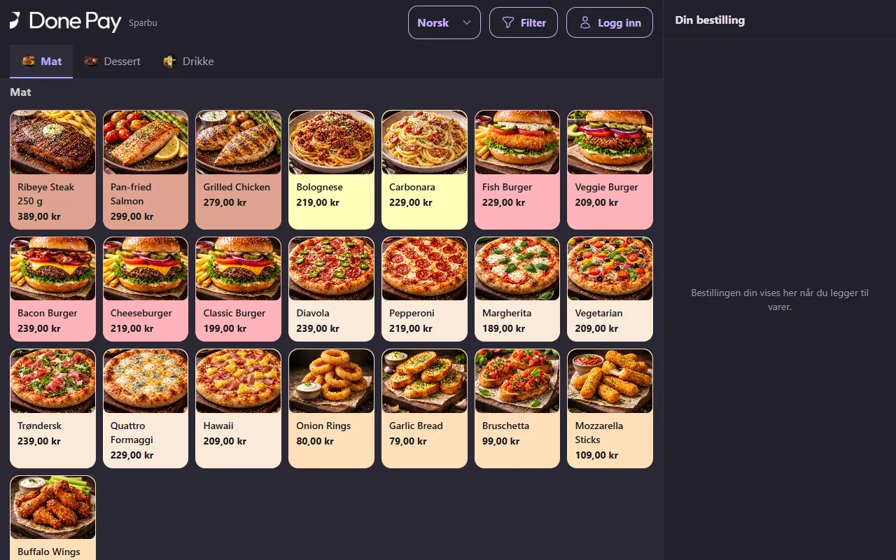

-
Step 3 of 9
Make it their own
Guests remove ingredients and add extras – in a dialog on a computer, full screen on a phone. The price updates straight away.
- Remove and extra, with a price per add-on
- Choose the quantity of each add-on
- Required choices, such as size, must be made
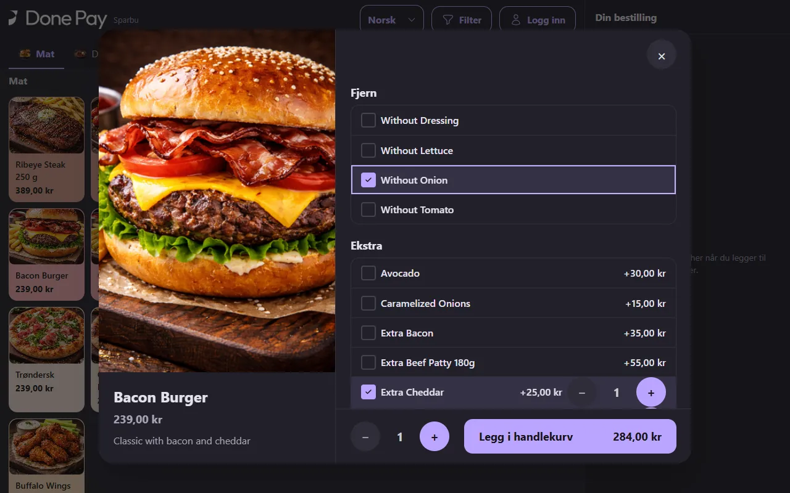
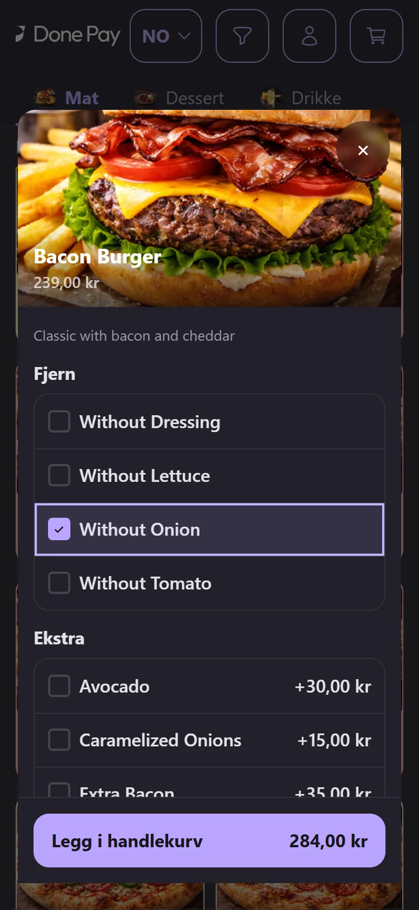
-
Step 4 of 9
The cart follows the screen
On a computer the cart sits in a side panel. On a phone it opens as a sheet from the bottom.
- Options are listed under each item
- The total is on the checkout button
- Change quantities without leaving the menu
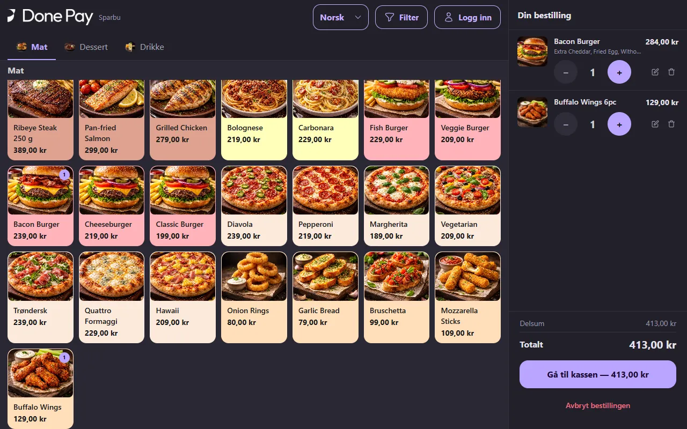
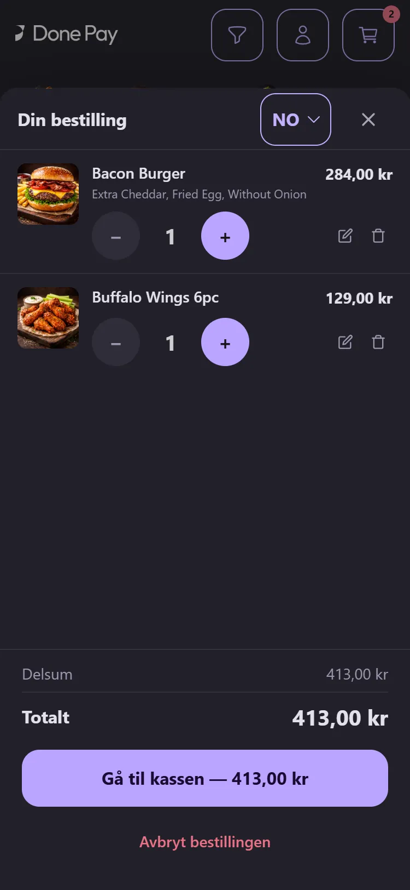
-
Step 5 of 9
Guests choose a pickup time
At checkout, guests choose “as soon as possible” or a set time within opening hours, and pay by card online.
- Only times when you are open
- A confirmation with a pickup number after payment
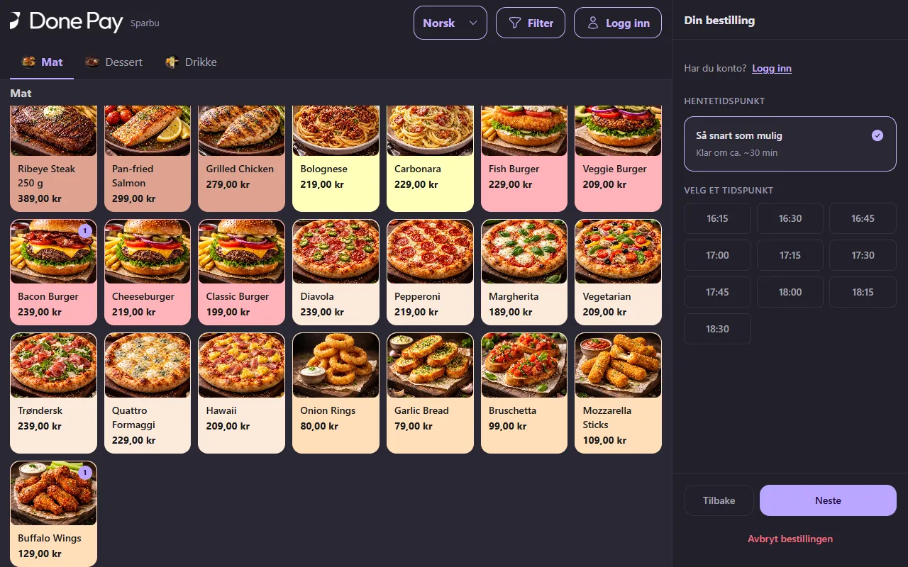
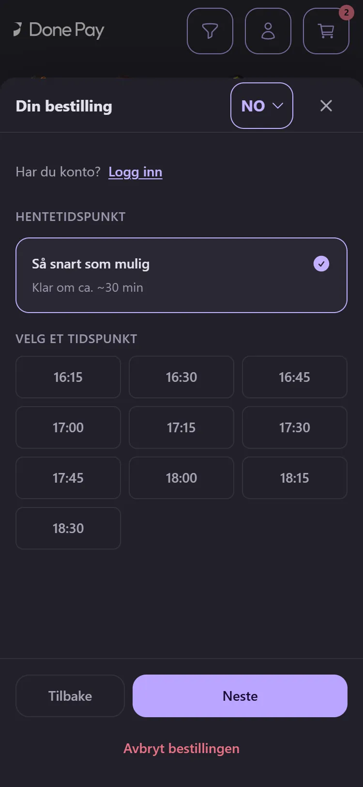
-
Step 6 of 9
Regular guests log in with their mobile number
Guests can order as a guest or create an account. They log in with a one-time code by SMS – no password.
- An account with name, mobile number and optional email
- A one-time SMS code instead of a password
- “Continue as guest” is always an option
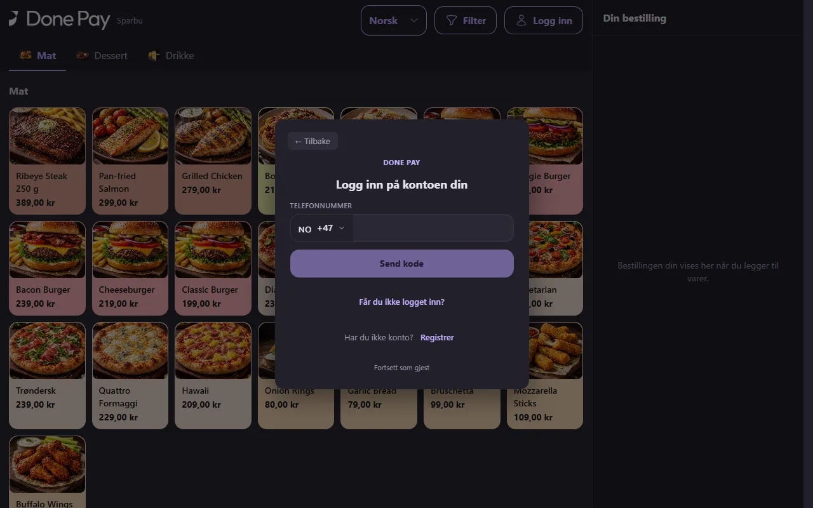
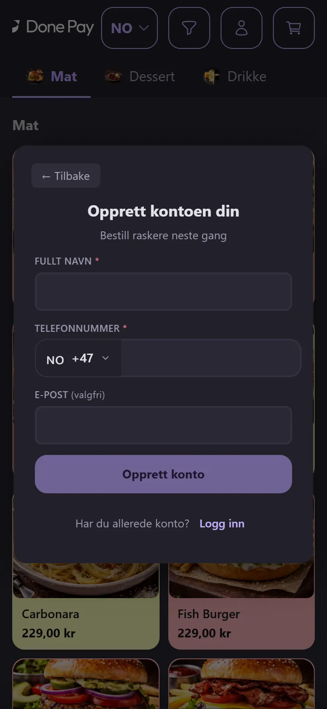
-
Step 7 of 9
Order history for regular guests
Logged-in guests find all their earlier orders with the date, items, status and amount.
- The 100 most recent orders
- The same history on computer and phone
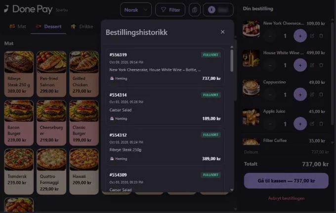
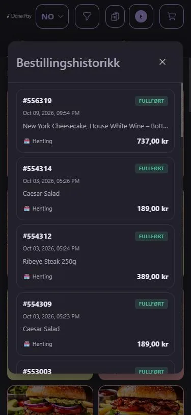
-
Step 8 of 9
Every detail of an order
Guests open an order and see the items, VAT, the pickup place and the payment method.
- The receipt can be sent again
- “Reorder” straight from the order
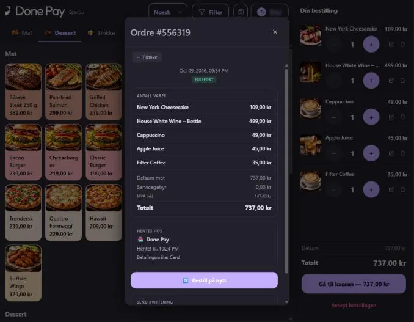
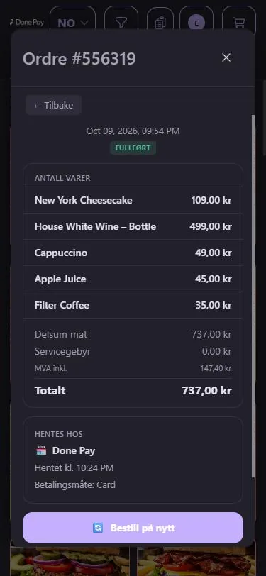
-
Step 9 of 9
A favourite order in one tap
“Reorder” puts the whole order in the cart. Guests can change it or go straight to checkout.
- All the items land in the cart at once
- Change quantities or add more before paying
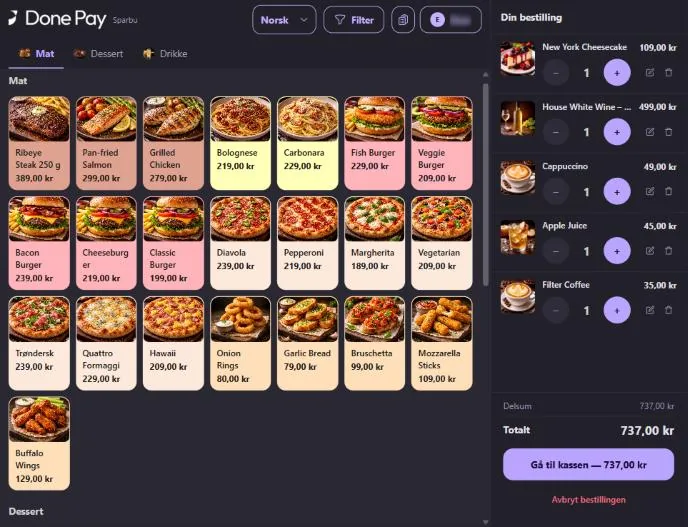
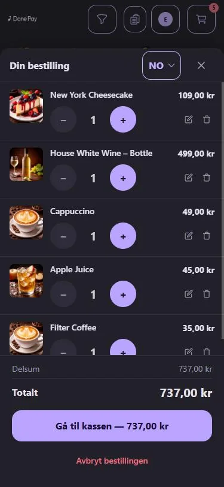
When you are closed
Ordering closes by itself
Guests can only order when you are actually taking orders. The rest of the time they get a clear message.
Opening hours
Outside opening hours the surfaces do not take orders, and Online Order only offers pickup times within opening hours.
Your own closed message
You write the message guests see when ordering is closed – for example when you open again.
An event that is not running
Before and after an event, QR and the kiosk show the closed message instead of the menu. The kiosk checks regularly by itself and opens again when the event starts.
When something goes wrong
A clear message – and a way forward
No guest should be left wondering what happened.
What the guest sees
The payment does not go through
The guest gets a clear message and can try again or go back to the menu. The cart stays as it was.
Ordering closes during payment
If ordering closes while the guest is at checkout, the payment is stopped and the guest sees the closed message.
What your staff see
Only paid orders
The kitchen gets the order once the payment is approved – not before.
The full picture
All orders and payments are in the overview, together with the sales from the till.
What your staff see
From order to handover
Guest orders land where your staff already work.
Order overview and kitchen screen
The order appears in the order overview and on the kitchen screen as soon as it is paid.
Pickup screen
When the food is ready, the order number shows on the pickup screen, so the guest knows it is time to collect.
Handover
At handover, staff scan the QR code on the guest’s receipt, and the order is marked as delivered.
Payment
Paid before it reaches the kitchen
Guests always pay as part of the order. Paying at the counter afterwards is not offered on the guest surfaces, so every order the kitchen gets is paid.
QR ordering
- Payment
- Card on a secure payment page in the browser
- Confirmation
- By SMS
Self-service kiosk
- Payment
- Card on the terminal at the kiosk
- Confirmation
- By SMS, plus a receipt as you set it up
Online Order
- Payment
- Card on a secure payment page
- Confirmation
- By SMS
Want to see guest ordering in your own business?
We set up a demo with your menu and show how the surfaces fit your venue.